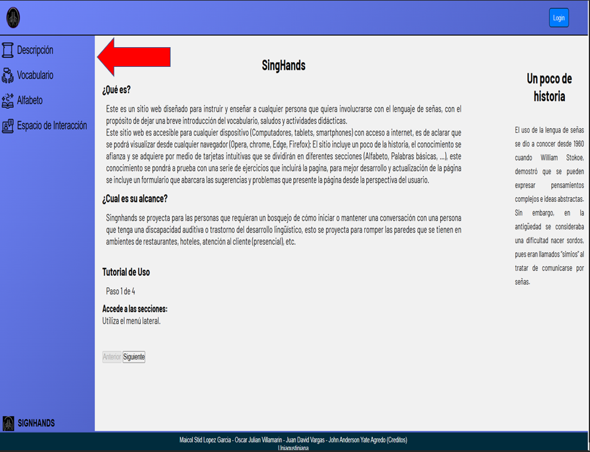
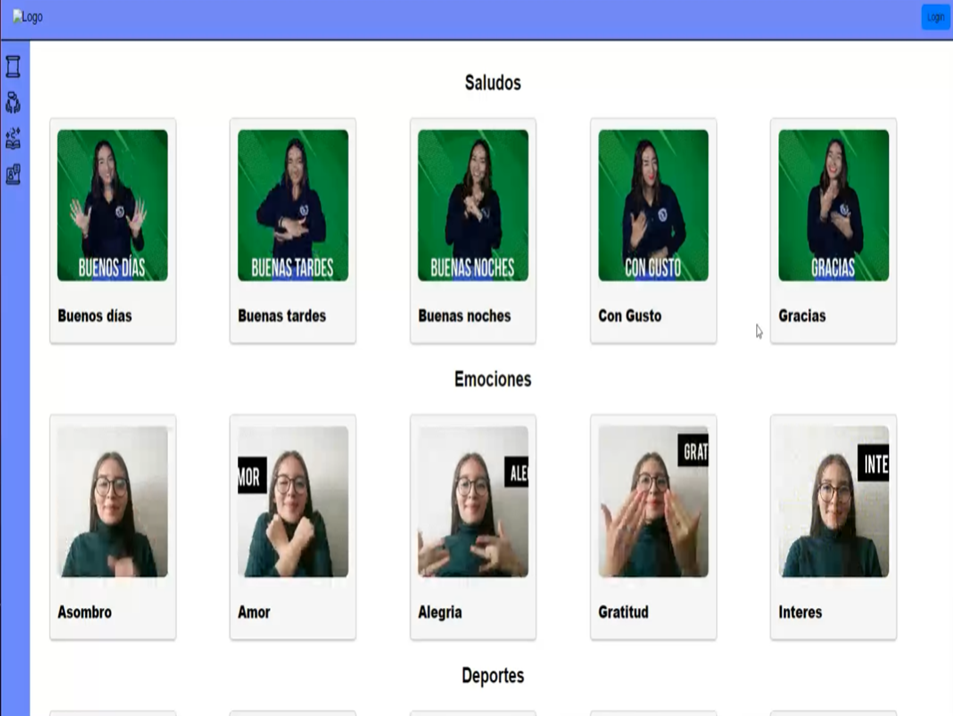
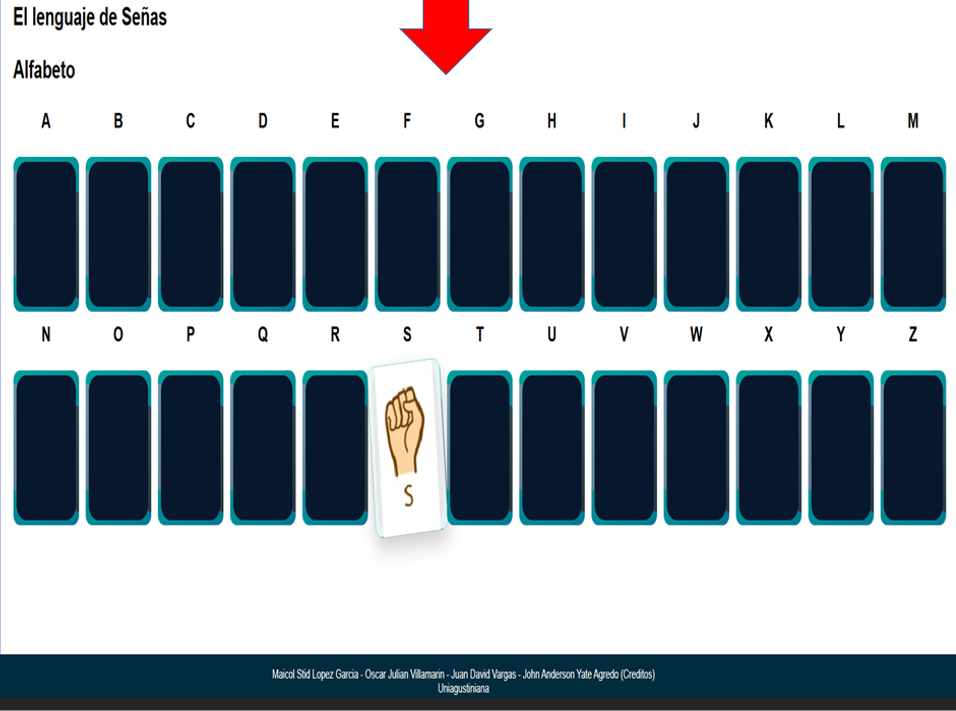
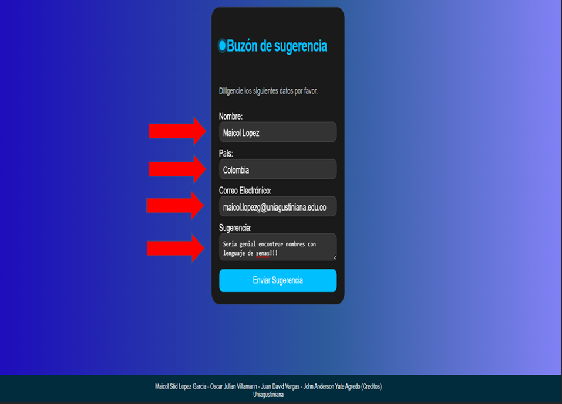
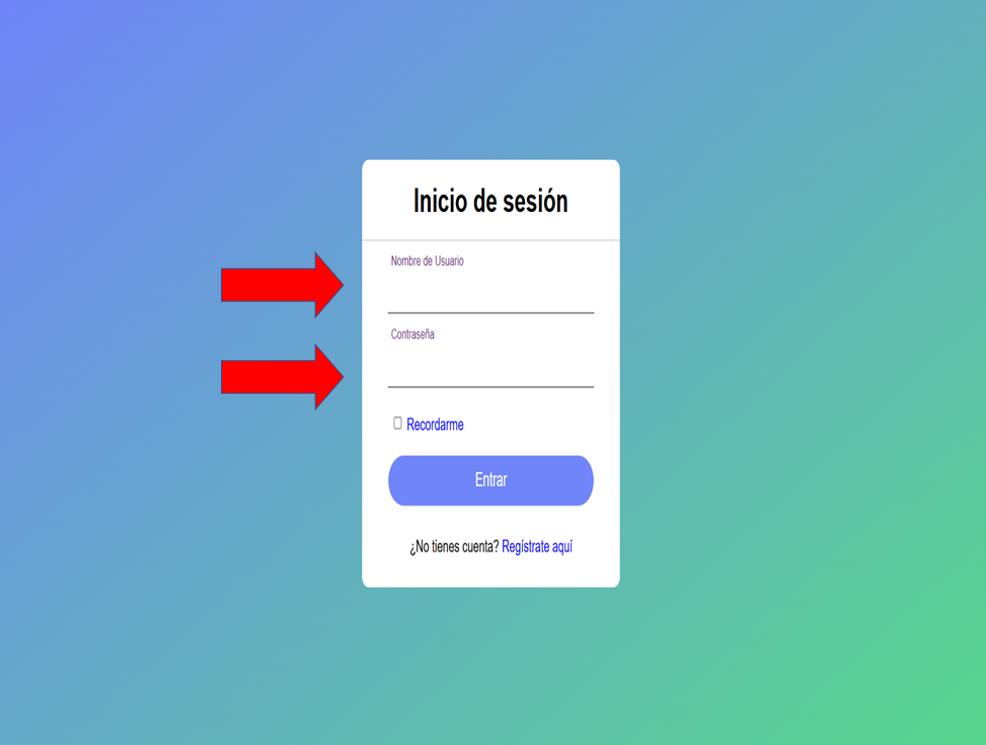
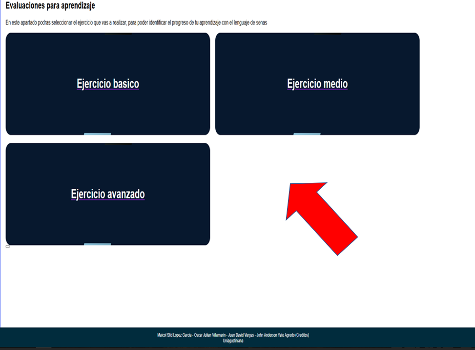

SignHands
¿Qué es?
Este es un sitio web diseñado para instruir y enseñar a cualquier persona que quiera involucrarse con el lenguaje de señas,
con el propósito de dejar una breve introducción del vocabulario, saludos y actividades didácticas.
Este sitio web es accesible para cualquier dispositivo (Computadores, tablets, smartphones) con acceso a internet,
es de aclarar que se podrá visualizar desde cualquier navegador (Opera, chrome, Edge, Firefox); El sitio incluye
un poco de la historia, el conocimiento se afianza y se adquiere por medio de tarjetas intuitivas que se dividirán
en diferentes secciones (Alfabeto, Palabras básicas, …), este conocimiento se pondrá a prueba con una serie de ejercicios
que incluirá la pagina, para mejor desarrollo y actualización de la página se incluye un formulario que abarcara las
sugerencias y problemas que presente la página desde la perspectiva del usuario.
¿Cual es su alcance?
Singnhands se proyecta para las personas que requieran un bosquejo de cómo iniciar o mantener una conversación con una persona que tenga una discapacidad auditiva o trastorno del desarrollo lingüístico, esto se proyecta para romper las paredes que se tienen en ambientes de restaurantes, hoteles, atención al cliente (presencial), etc.
Tutorial de Uso
Paso 1 de 4
-
Accede a las secciones:
Utiliza el menú lateral deslizando el mouse para poder acceder al menu de navegacion.
 -
Explora el vocabulario:
Aqui podras navegar por las diferentes secciones para ampliar el vocabulario.
 -
Explora el alfabeto:
Aqui podras acceder al alfabeto de todas las letras.
 -
Envía sugerencias:
Aqui podras llenar el buzon con tus datos para poder ayudarnos a mejorar en este espacio educativo.
 -
Registro:
Presiona el boton del login, crea tu cuenta en "registrate aqui", y podras acceder al apartado de evaluaciones para poder realizar ejercicios que ayudaran a tu progreso
 